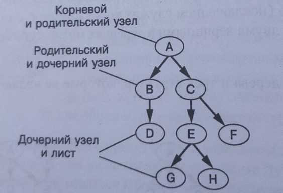
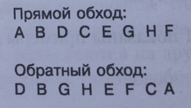

Алгоритм поиска с возвратом и обхода дерева.
Условие:
Нужно создать структуру данных к дереву.
Дерево:

И написать два алгоритма для прямого и обратного обхода дерева с выводом данных для каждого узла.
Прямой и обратный обход:

Код:
"""ПРИМЕР ПОДРОБНОЙ ЗАПИСИ ДЕРЕВА. НОВАЯ СТРУКТУРА ДАННЫХ - "ДЕРЕВО"."""
# здесь описаны все узлы
root = { "data": "A", "children": [] }
node2 = { "data": "B", "children": [] }
node3 = { "data": "C", "children": [] }
node4 = { "data": "D", "children": [] }
node5 = { "data": "E", "children": [] }
node6 = { "data": "F", "children": [] }
node7 = { "data": "G", "children": [] }
node8 = { "data": "H", "children": [] }
# здесь описаны, только те узлы, у которых есть дети. По-другому, те узлы, которые не будут являться базовыми случаями (листьями дерева).
root["children"] = [node2, node3]
node2["children"] = [node4]
node3["children"] = [node5, node6]
node5["children"] = [node7, node8]
###################################################################################################################################
# Весь код выше создаст новую структуру данных, кот. очень сложно записать другим более коротким вариантом без ошибок.
# Вот такая запись получается после исполнения кода --> {'data': 'A', 'children': [{'data': 'B', 'children': [{'data': 'D', 'children': []}]}, {'data': 'C', 'children': [{'data': 'E', 'children': [{'data': 'G', 'children': []}, {'data': 'H', 'children': []}]}, {'data': 'F', 'children': []}]}]}
# Записать такое в приведённом коротком варианте очень сложно без ошибок!!!
###################################################################################################################################
"""ПРЯМОЙ ОБХОД ДЕРЕВА.
Вывод значений по факту сборки стека.
Если представить, что стек собирается и разбирается, то здесь ситуация иная: вызовы как бы расходятся по ветвям дерева и угасают (функция возвращает None).
Базовый случай всегда происходит на последнем этапе работы функции, когда она возвращается."""
def straight(node):
print(node["data"], end=" ") # печатаем данные узла
if len(node["children"]) > 0: # это рекурсивный случай, в узле котором есть дочерние элементы
for child in node["children"]:
straight(child)
# Базовый случай не нужен
return
print()
straight(root) # вызов функции прямого обхода дерева
print("\n")
###################################################################################################################################
"""ОБРАТНЫЙ ОБХОД ДЕРЕВА.
Вывод значений по факту разборки стека."""
def straight(node):
for child in node["children"]:
straight(child)
print(node["data"], end=" ") # печатаем данные узла
# Базовый случай не нужен
return
print()
straight(root) # вызов функции прямого обхода дерева
print("\n")